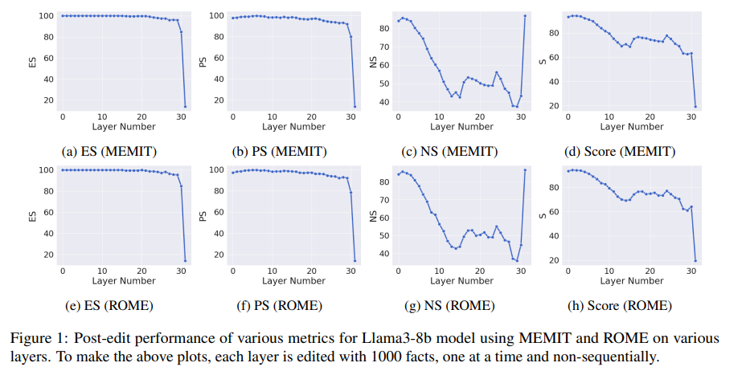
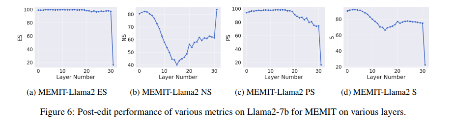
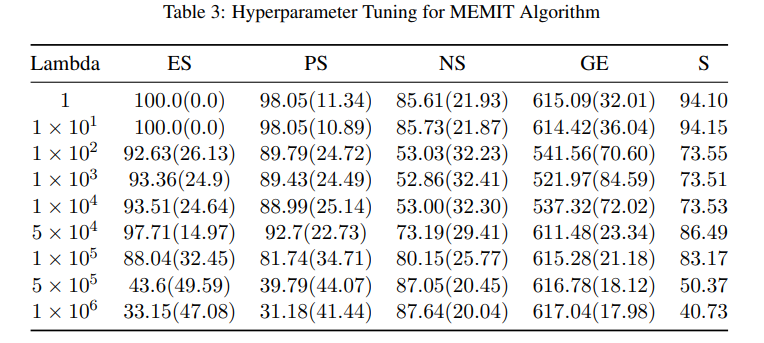
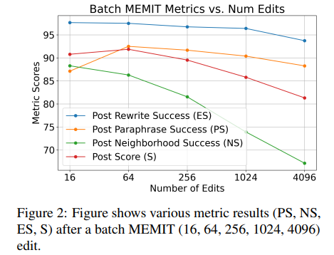
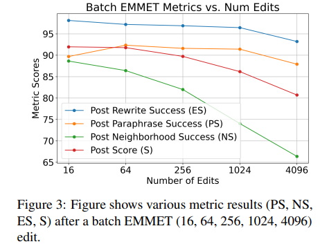
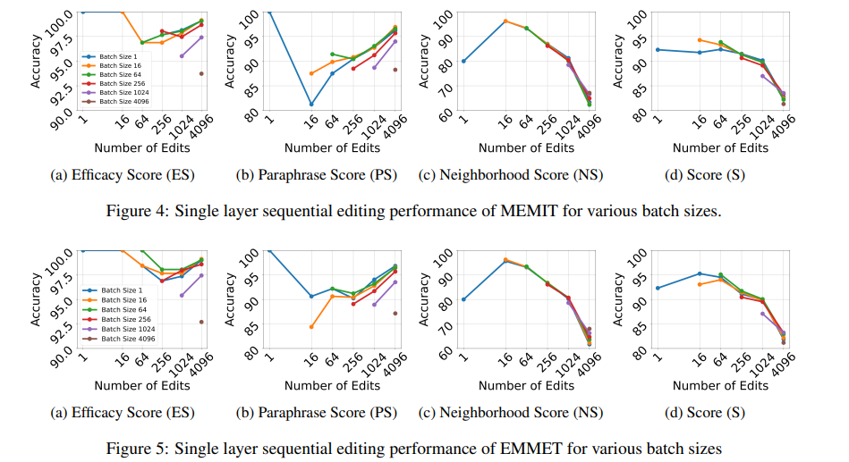

Is Bigger Edit Batch Size Always Better? - An Empirical Study on Model Editing with Llama-3 #
Authors: Junsang Yoon, Akshat Gupta, Gopala Anumanchipalli
Posted by Jin Hyun, Gyuhyun Jung
Background #
What is model editing? #

Fig 1. Concept of model editing.
The rapidly evolving field of artificial intelligence faces the challenge of keeping large language models (LLMs) up-to-date with new information, as traditional retraining methods are time-consuming and resource-intensive. As shown in figure, an alternative is model editing proposed in (Sinitsin et al., 2020). It enables data-efficient alterations to the behavior of models.

Fig 2. Example of model editing in case of MEMIT.
Model editing modifies stored facts within a model and corrects inaccuracies without retraining. Techniques such as ROME (Rank-One Model Editing) (Meng et al., 2022a), MEMIT (Mass Editing Memory in Transformer) (Meng et al., 2022b), and EMMET (Equality-constrained Mass Model Editing algorithm for Transformers) (Gupta et al., 2024), known as “locate-and-edit” algorithms, have emerged to optimize the preservation-memorization (PM) objective. These methods directly modify specific areas of the model and are applicable to any transformer-based LLMs, offering a more efficient way to update models without retraining.
How model editing works? #
For a relation \((s,r,o)\) expressed as a tuple in the form of (subject, relation, object). In model editing, we aim to update the memory of the existing model with new facts by learning about a new object \((s,r,o^*)\) . Model editing directly reform the weight by objective function, called the preservation-memorization objective. This objective consists of two parts, a preservation term and a memorization term. Below equation shows how ROME works with preservation term and memorization term.
\( \argmin_{\hat{W}} \left\| \hat{W} K_0 - W_0 K_0 \right\| \quad \text{s.t.} \quad \hat{W} k_e = v_e \\Preservation\_term=\left\| \hat{W} K_0 - W_0 K_0 \right\| \\ Memorization\_term=\hat{W} k_e = v_e \)
Where W represents the weights of the feedforward layer we want to edit, k is a key-vector representative of a fact, \(v_e\) is the desired output, and \(K_0 =[k_1^0 |k_2^0 |\cdots| k_0^N]\) is a matrix consisting of facts we want to preserve. Above equation is optimized by follwing gradient.
\(\hat{W} = W_0 + \Delta \quad \text{where} \\ \Delta = (v_e - W_0 k_e) \frac{k_e^T C_0^{-1}}{k_e^T C_0^{-1} k_e} \)
For MEMIT model editing. it optimizes same objectives with ROME, but performance memorization using a least-square constraint, which allows for a closed-form solution. It has similar form with ROME method, but it multiplies \lambda term, which is hyperparameter, to preservation term. Also, it combines memorization term for minimize target
\(\argmin_{\hat{W}} \lambda\left\| \hat{W} K_0 - W_0 K_0 \right\| + \left\| \hat{W} K_E - V_E \right\|\\Preservation\_term=\lambda\left\| \hat{W} K_0 - W_0 K_0 \right\| \\ Memorization\_term=\hat{W} K_E - V_E \)
\(V_E\) is stacked matrix of \(v_e\) vectors, and fact is represented by a pair of vectors denoted as key ( \(k_e\) ) and value ( \(v_e\) ). This objective has similar solution of ROME, followed by below equations.
\(\hat{W} = W_0 + \Delta \quad \text{where} \\ \Delta = (V_E - W_0 K_R)K^T_E (\lambda C_0 + K_E^T K_E^T)^{-1} \)
In EMMET, it shows model editing is possible with batched facts. It is possible by allowing memorization happens using an equality-constraint. EMMET objective and gradient solution is followed by below equations.
\(\argmin_{\hat{W}} \left\| \hat{W} K_0 - W_0 K_0 \right\|\quad \text{s.t.} \hat{W} k_i^e = v_i^e \quad \forall i \in [1, 2, \cdots, E] \\Preservation\_term=\left\| \hat{W} K_0 - W_0 K_0 \right\| \\ Memorization\_term=\hat{W} k_i^e = v_i^e \quad \forall i \in [1, 2, \cdots, E] \\ \hat{W} = W_0 + \Delta \quad \text{where} \\ \Delta = (V_E - W_0 K_R)(K_E^T C_0^{-1}K_E)^{-1}K_E^TC_0^{-1} \)
How model editing performance is estimated? #
Model performance is estimated with 4 main scores, and these scores are bsed on how model editing works with expressions of correct facts in \(s,r,o^{c}\) and false facts in \((s,r,o^{*})\) .
Efficacy Score (ES) #
ES measures if the new fact, which we want to edit, is successfully edited to model. It is measured by percentage where \(\mathbb{P}[o^*] > \mathbb{P}[o^{c}]\) , which means the portion of correct edition result from predictions.
Paraphrase Score (PS) #
PS measures model’s ability to generalize following an edit. It is measured by where P(new fact) > P(old fact) under paraphrases of the query prompt.
Neighborhood Score (NS) #
NS represents the specificity of model editing. To measure NS, we collect a set of nearby subjects \(s_n\) for which \((s_n,r,o^{c})\) holds true. Then we test \(\mathbb{P}[o^*] > \mathbb{P}[o^{c}]\) , reporting the success fraction asn NS.
Composite Score (S) #
S represents the overall performance. It combines aspect of edit success, generalization, and specificity. It is calculated as the harmonic mean of Edit Success (ES), Paraphrase Score (PS), and Neighborhood Score (NS). It provies overall efficacy of model edits.
References #
Yunzhi Yao, Peng Wang, Bozhong Tian, Siyuan Cheng, Zhoubo Li, Shumin Deng, Huajun Chen, Ningyu Zhang. 2023. Editing large language models: Problems, methods, and opportunities. arXiv preprint arXiv:2305.13172.
Anton Sinitsin, Vsevolod Plokhotnyuk, Dmitriy Pyrkin, Sergei Popov, Artem Babenko. 2020. Editable neural networks. arXiv preprint arXiv:2004.00345.
Kevin Meng, David Bau, Alex Andonian, and Yonatan Belinkov. 2022a. Locating and editing factual associations in gpt. Advances in Neural Information Processing Systems, 35:17359–17372.
Kevin Meng, Arnab Sen Sharma, Alex Andonian, Yonatan Belinkov, and David Bau. 2022b. Massediting memory in a transformer. arXiv preprint arXiv:2210.07229.
Akshat Gupta, Dev Sajnani, and Gopala Anumanchipalli. 2024. A unified framework for model editin. arXiv preprint arXiv:2403.14236.
Experiments & Results #
Whats the Optimal Layer for Model Editing? #
Investigating the effectiveness of hidden states in LLMS for recalling facts using causal tracing showed thjat subject’s last token within the feed-forward networks at intermediate layer plays a significant role. (Meng et al., 2022b)
Motivation : However, later work showed that layers deemed important during causal tracing did not always translate to model editing performance. Therefore, this work focused on finding the optimal layer for model editing layer empirically.
Steps for finding optimal layer
- Make 1000 non-sequential edits from the CounterFact(Meng et al., 2022a) dataset at each layer of the Llama-3 model.
- Calculate various model metrics(ES, PS, NS, S) to evaluate their impact.
- The layer that achieves the highest score is selected as the most suitable for targeted interventions.


Evaluation results showed that layer 1 for Llama-3 outperformed on numerous metrics. Furthermore this trend was also shown in previous version, Llama-2, as seen in Figure 6. Here, MEMIT and ROME have very similar performance for model editing across layer of a model.
→ Why? : Both algorithms optimize for the same objective with difference in the memorization constraints. This shows that memorization constraints plays minor effect on editing performance.
Optimal way of Scaling Up model editing? #
After finding the optimal layer, scaling of model editing on the same model can happen in two ways : batch editing & sequential editing.
Batch Editing :
A large number(batch size) of knowledge edits are performed on the model with the same update. This work stick to editing a single layer of the model.
Experiment setting
- Targeting layer1 in Llama-3 with batch size 16, 64, 256, 1024, and 4096 for Batched editing.

Evaluation Results of Batch Editing
 
For both MEMIT & EMMET editing, metrics are seen to consistently fall with larger batches, with NS being the most pronounced to fall. ES is most resilient metric to edits. PS, only metric to do so, seen to increase dramatically between batch sizes of 16 and 64. The similar trend between two editing techniques reflect the similarity in their optimization objectives.
Sequential Batch Editing :
Sequential Editing is an alternate way to scale up model editing where facts are added sequentially to a model.
This work proposes optimal way to scale model editing that strikes a balance between Batch Editing & Sequential Editing.
Sequential-batched editing sequentially edit many batch of facts at a time. And the experiment was conducted going from batch size of 1 up to 4096. (1, 64, 256, 1024, 4096)

Experimental results according to figures above showed that larger batch sizes are actually worse for model performance than sequential edits with smaller batches. In contrast, larger batch sizes seem to be better for metrics in NS : while batch edits are less successful in general, it is better in preserving locality of edits. This results were concluded to optimal batch size of 1024 for both MEMIT and EMMET. Increasing batch-size beyond that lead to larger model degradation and better editing results can be achieved by sequential-batched editing with smaller batch sizes.
Conclusion #
This work examines several model editing techniques in the context of the newly released Llama-3 model and there are some conclusion as follows:
- Earlier layers may be more optimal intervention points.
- Model editing techniques that share same optimization objectives shows similar trends in layer and editing.
- Smaller, frequent sequential batch size edits have a superior performance.
- Batch size of 1024 for MEMIT and EMMET is optimal batchsize with sequential-batched editing.
The authors argue that the current trend of pushing towards bigger edit batch sizes for scaling model editing may have limitations. Instead, they propose that future research should focus on methods that combine both batched and sequential editing to optimize performance while minimizing model degradation.
Future work will include experiments on multi-layer intervention for edits, as well as experiments against other popular models and algorithms, including methods that are hyper-network based
- Provide your own perspectives and discussions, and propose a future research direction.
NS의 경우 layer가 뒤로 갔을 때 다시 성능이 좋아진 원인, PS에서 batch size를 증가 시켰을 때 좋아지는 이유를 분석하면 multi layer edit에서 optimal point를 찾는데 도움이 될 수도 있을 것 같음.
single layer에서 나아가 multi-layer에서 몇 개의 layer edit이 효과적인지 조사.
batch size가 증가함에 따라 전체적인 metric이 내려가는 상관관계를 emprically말고 이론적으로 밝히면 더욱 효과적으로 model editing 연구에 도움이 될 수 있을 것 같다.